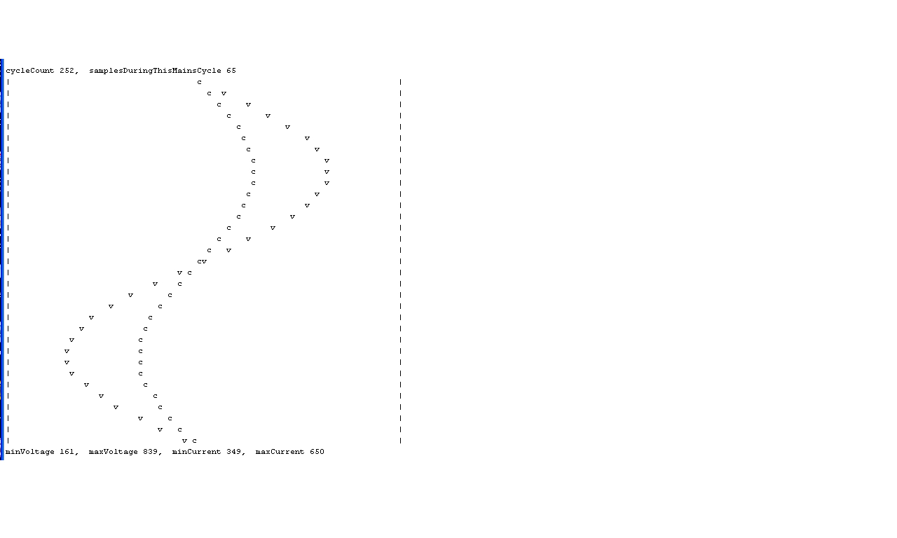

I was about to trash all my work and buy a commercial Energy Monitor system but decided to post this first in the hopes someone can come to my help!
Before I go on, I would like to thank ALL of the participants for this project! Its been an awesome experience!!
Ok, the situation:
- I have two small PV panels each connecting to separate 600W grid tie inverters. Both connected to same outlet
- Panels rated abt 300 W and 200W respectively
- I built an Arduino Monitor as per: http://openenergymonitor.org/emon/buildingblocks/how-to-build-an-arduino-energy-monitor
- I initially used only ONE CT in order to understand the code, output etc etc. I used this CT: http://www.seeedstudio.com/depot/Noninvasive-AC-Current-Sensor-100A-max-p-547.html
- For voltage i used: http://openenergymonitor.org/emon/buildingblocks/measuring-voltage-with-an-acac-power-adapter
- After many hours of tinkering I found the Arduino Power source was affecting my results and found this adapter/charger to work the best: HP F1290A AC/DC Adapter Power Supply 5V / 2.5A
- Our official voltage is 110. It oscillates between 115 and 130 averaging at about 120
- I used the suggested calibration procedure in: http://openenergymonitor.org/emon/buildingblocks/calibration
- Although I used a kettle to adjust the PF as close to 1 as possible, when then connecting to my PV i found I had to re-adjust the constants as follows so that the Arduino readings and KillAwatt reading were close:
ct1.current(A0, 60.6); // for Current: input pin, calibration.... 111.1 or 90.9 or 60.6
ct1.voltage(A3, 110.0, -4.5); // Voltage: input pin, calibration, phase_shift
ct1.calcVI(100,2000);
- I am using an Original Arduino UNO R3 ( I also used a clone with same results...)
Ok, now for the problems, questions and doubts!!
Q - The documentation states "The phase calibration coefficient should not normally go outside the range 0.0 – 2.0" I found that -4.5 provided the closest results comparing my arduino power monitor and my KillAWatt (KAW) while connected to the PV inverter. Why is this negative number working? Why is it negative? I left the system to operate for several days and the numbers of both Arduino and KAW were acceptably close...
Q - When I then added a SECOND CT connected to the second Inverter, numbers went ALL OVER THE PLACE!! The second CT voltage and current calibrations are just as crazy and needless to say, the readings are mostly garbage! I am unable to get the KAW and Arduino to come consistently close. They appear to be close for a few minutes and then they go nuts - amps and power factor numbers go all over the place!!
ct1.current(A0, 60.6); // for Current: input pin, calibration.... 111.1 or 90.9 or 60.6
ct1.voltage(A3, 110.0, -4.5); // Voltage: input pin, calibration, phase_shift
ct1.calcVI(100,2000); // Calculate all, No.of half wavelengths (crossings), time-out
ct2.current(A1, 0.59);
ct2.voltage(A3, 109.5, -200.5);
ct2.calcVI(100,2000);
The numbers for CT2 above are the closest numbers I have been able to get so that the KAW and Arduino more or less match up...
What am I doing wrong? What am I not getting? Why am I unable to get the second CT to work as well as when i used only one?
Q - Why is the Arduino power source soo crucial making results between the KAW and Arduino vary so much? I tried using various power sources (my computer USB port, an iPhone charger cube, a computer 12V charger) and all gave me different results. How come? The iPhone charger was the worst...
Q - Would a battery provide the best matching results? I have not tried a battery yet...
Q - Why did I find myself having to re-adjust the voltage and current coefficients AFTER having already adjusted them with a resistive (a Kettle) load?
Last minute Doubt - Could the Arduino 5v power source be to low messing things up when I add a second CT?
If you have read this far, I appreciate it!! If you can help me shed some light on my questions, I appreciate it even more!!
TIA
Paul
Re: Help! please - Arduino, two PV panels
I'll have a crack at some of your questions, and leave others to those more qualified....
Q - Why is the Arduino power source soo crucial
The AVR processor needs a reference voltage by which it can measure all analog inputs presented to it. It's never actually telling you what voltage it sees at an analog input, but rather it's telling you what fraction of the reference voltage it's seeing. So if you want that reading to be consistent from sample to sample, it's vital that the reference voltage isn't moving around. Most designs discussed in these parts use Vcc as that reference, so you need a very clean Vcc for good results. There's a thread about that here: http://openenergymonitor.org/emon/node/10111
Why am I unable to get the second CT to work as well as when i used only one?
It's possible you're dealing with more than one problem. Did you build a separate 2.5V mid-point for each CT channel? What's your circuit look like?
Re: Help! please - Arduino, two PV panels
Dbc,
Tks for the power source answer! I will read, digest and understand!!
Yes, i built two completely different circuits for each CT. Same as: http://openenergymonitor.org/emon/buildingblocks/how-to-build-an-arduino-energy-monitor But with TWO CT circuits...
Hope it clarifies things
Tks again
P
Re: Help! please - Arduino, two PV panels
I have read to the end!
Q1. PHASECAL (the phase calibration constant) interpolates or extrapolates between voltage samples in an attempt to correct phase shifts in the transformers and the delay between reading voltage and current. You certainly should not need to shift the voltage by 4½ samples to line up with the current. I don't know what your ac voltage sensing transformer is, but that could be the culprit. There's a Building Blocks article about how the algorithm works.
You could try the shop ac adapter (we know that is OK), or you could try using a 240 / 18 V transformer. Running it at half-volts should give you a better performance in the phase error department, but it's not guaranteed.
Also, the CT is struggling. With only 300 W & 200 W (albeit at 120 V), it's on the bottom limit of its range. You can improve that very easily by using multiple turns for the primary winding (which will improve the phase error) and by increasing the value of the burden resistor. If you have a 10-turn primary, and say 100 Ω burden, those will give you a max current of 3.3 A approx. You'll need a current calibration constant of about 2.0.
Q2. I don't know. It certainly should not do that. Is CT2 another instance of EnergyMonitor - it looks as if it is. Does each CT have its own bias network, so that the two aren't interacting? I think you've found the solution when you ask about the power supply (and the rest of your questions don't conflict with this): my guess is that none of your power supplies are up to the job, and a good part of what you are "measuring" is actually rubbish on the power supply, because that is used as the voltage reference against which the inputs are measured. So if that has noise on it or it fluctuates, your measurements are wrong. Can you try a big (100 - 470 μF or so) electrolytic capacitor across your 5 V supply?
How have you assembled the components? Because you have quite a low output from your CTs (which will improve when you change the burden resistor), the physical layout could be quite important. In general terms, the shorter the leads between the front end and the Arduino, the better.
Q4. If I'm right about the power supplies, a battery should give you sensible and stable results.
Q5. If you've calibrated properly, you should definitely not need to change the calibration again. But as I wrote above, the supply voltage can affect calibration. If you are using emonLib, that can compensate for slow voltage changes (i.e. a falling battery voltage) but it can't cope with power supply nasties.
Re: Help! please - Arduino, two PV panels
One other thing I just noticed (if I'm reading your posting correctly), it seems like you're trying to measure quite low power values.... 200W max from one, and 300W max from the other? Depending on what you've done with burden resistors etc. your 100A CT might be really struggling right down there at the low end. It's possible all your measurements are drowning in the noise because they're so small.
Also, if you calibrated your phase error at a relatively high power value (2kW say?), then it's likely not suitable down at the low end. Most CT's phase errors go pretty crazy as the current gets really low. There are some good graphs of that here: http://openenergymonitor.org/emon/buildingblocks/report-yhdc-sct-013-000-current-transformer. I'm not familiar enough with emonlib to comment on your PHASECAL values, but there are plenty here who are.
Re: Help! please - Arduino, two PV panels
Hi Robert,
Thanks for your input, you have provided several things to work on!!
For the next few days I am going to work on several fornts:
- Power source: I will try various others including a 5000Mah Lipo Battery which should give me stable and ample supply! If push comes to shove, I could write some code to ONLY charge the pack during the night when I do not need it... If fact, I am also thinking of lowering the frequency at which I write to emons at night ... No point in filling disk space with zeroes!!
- Multiple turns on primary. Sounds logical!!
- Consider changing CT clips
As dBC said, I could have several problems on my hands - which I am certain I do!!
Thanks again folks!!
P
Re: Help! please - Arduino, two PV panels
The RawSamplesTool_4ss tool on my Summary Page will show your voltage and current values as a graph, something like this:
Re: Help! please - Arduino, two PV panels
Nice!! Thanks
I will give it a try... I have decided to redo ALL my circuitry!! I have a feeling something is not right on that front... I am going to use a LIPO pack... I will keep you all posted!!
Tks
P
Re: Help! please - Arduino, two PV panels
Hi
Ok, an update!
I decided to scrap my circuit and tossed everything out. I rebuilt and results have been much more consistent!! I also simplified things by using only one CT. I also increased the number of windings on the CT form one pass to three which has given me a higher current resolution.
I ran calypso_rae's RawSamplesTool_4ss but, to be honest could not quite interpret the results (!!) I am working on it though!!
I changed my 5v Arduino power source to a 12v power source which meant having to re-adjust the calibration numbers. My current and voltages are pretty much spot on and I am happy for that!! AT least my apparent power values are on!! My phase shift though is now at -12... Odd number...
I am still however, unable to ge the Power Factor to match up to my KillAWatt - which I have assumed to be correct!. After some thought I came to the conclusion that my PF factor is not linear. If I adjust it to one part of the range (say PFs close to 1) I then find its off at the mid range (close to 0.5). Here is a plot of the two PF’s: https://www.flickr.com/photos/phamiltonsmith/16369951034/
Indeed the PF is NOT linear as you can see. Although there is some noise, the numbers are pretty much consistent. Therefore, to compensate for these "errors" I am going to use 3 map functions to draw 3 straight lines through my plot. I suspect this is not the way to adjust the PF but It should work!!
This is my code, I will test it tomorrow:
if (ct1.powerFactor >= 0.00 && ct1.powerFactor <= 0.70) {
powerFactor = map (ct1.powerFactor, 0.00, 0.70, 0.00, 0.40);
} else if (ct1.powerFactor > 0.70 && ct1.powerFactor <= 0.85) {
powerFactor = map (ct1.powerFactor, 0.70, 0.85, 0.40, 0.70);
} else if (ct1.powerFactor > 0.85 ) {
powerFactor = map (ct1.powerFactor, 0.85, 1.00, 0.70, 1.00);
}
RealPower = apparentPower * powerFactor;
Ill keep you posted
P
Fixed link - BT
Re: Help! please - Arduino, two PV panels
Your power factor changing is almost certainly due to the phase errors in your CT and possibly your ac adapter changing with current or voltage respectively. What currents are you using - you've mentioned 3 primary turns so it can't be much, and still the 100 A CT? If you look at the report in Building Blocks, you can see just how much the phase error changes at low currents.
I'm a bit puzzled by your calculation of real power, because power factor is obtained in emonLib with
powerFactor=realPower / apparentPower
PHASECAL should not be -12, that means that you're extrapolating the voltage by 12 samples. Are you actually on the same phase with your voltage and current?
Re: Help! please - Arduino, two PV panels
I'm curious how you were able to dial up such a wide range of power factors for your graph? If you can reliably choose a steady state power factor of your load, then a whole world of calibration options open up to you. Calibrating at a power factor of 1 is not really optimal but is chosen here because everyone has some equipment that has a power factor of 1.
I calibrate my meter at a power factor of 0.5, but that requires some fairly specialised kit (a power calibrator basically).
Re: Help! please - Arduino, two PV panels
I think there's a serious problem with the installation, and that calibration is pointless until that's addressed. The phase/timing calibration attempts to line up the voltage wave with the current by interpolating or extrapolating between samples. With PHASECAL = -12, that's 13 samples away, since normally (at 50 Hz) it's +1.7. From Paul's email address, I'm guessing he's on a 60 Hz system (though we don't know) and if so, he should be seeing around 44 samples per cycle - so more than ¼ cycle phase error? ! ! ! It's not credible, so there's something else seriously wrong.
Re: Help! please - Arduino, two PV panels
I ran calypso_rae's RawSamplesTool_4ss but, to be honest could not quite interpret the results (!!) I am working on it though!!
If you could post some results using this tool, that may help. With a resistive load, the waveforms for voltage and current should be closely aligned. After waiting for a few seconds, all of the ADC values during one or more complete mains cycles are recorded. It then sends this data to the Serial port in a simple graphical form (ASCII-art), and the raw values follow so that they can be imported into a spreadsheet for higher resolution viewing. The program then sits in a paused state from which another run can be initiated by typing 'g' [cr] at the Serial terminal.
This tool requires an AC signal to be present on the voltage sensor pin. When this signal is present, a countdown sequence will appear on the Serial Monitor's screen and the waveforms will then appear. Common reasons for this tool not behaving as intended would be:
- Serial Monitor not open (the magnifying glass icon, top right of the IDE)
- no AC signal at the voltage sensor port
Hope this helps.
Re: Help! please - Arduino, two PV panels
Hi
Here some results!! I tried several things:
1- I modified Phase Checker so that it would write directly to an SD card. I input the variables via the Console end then disconnect the USB to let the sketch write to the SD card. This way I could eliminate any "weirdness" due to my computer pawer source affecting the library. If anyones is interested, I can post the code...
2-I ran the sketch with my kettle on (it runs at about 12 amps at 120 V) several times and the following output is the closest it comes to a PF of 1!! I tried to get an appliance that was nice and high and avoid any noise due to the CT. I have 3 turns on the CT.
3-Today i came up with a solution to my power Factor woes!! I will post the solution in a new comment
********************
real power = -19718.59 apparent power = 71862.99 power factor = -0.27
real power = -26170.99 apparent power = 69591.16 power factor = -0.38
real power = -26607.82 apparent power = 71589.94 power factor = -0.37
real power = -25652.22 apparent power = 71130.08 power factor = -0.36
real power = -26517.16 apparent power = 71405.23 power factor = -0.37
PHASECAL is now 1.10
real power = -25339.36 apparent power = 71372.80 power factor = -0.36
real power = -26020.74 apparent power = 71284.51 power factor = -0.37
real power = -25643.02 apparent power = 70771.17 power factor = -0.36
real power = -25615.32 apparent power = 71083.26 power factor = -0.36
real power = -25317.83 apparent power = 70535.66 power factor = -0.36
PHASECAL is now 1.20
real power = -25621.61 apparent power = 71288.64 power factor = -0.36
real power = -25497.74 apparent power = 71709.15 power factor = -0.36
real power = -25877.58 apparent power = 71951.36 power factor = -0.36
real power = -25699.48 apparent power = 72209.24 power factor = -0.36
real power = -26465.37 apparent power = 72181.49 power factor = -0.37
PHASECAL is now 1.30
real power = -26235.88 apparent power = 73235.20 power factor = -0.36
real power = -25893.97 apparent power = 72742.39 power factor = -0.36
real power = -25640.45 apparent power = 73017.99 power factor = -0.35
real power = -25671.06 apparent power = 72853.11 power factor = -0.35
real power = -26280.29 apparent power = 72190.10 power factor = -0.36
PHASECAL is now 1.40
real power = -25571.52 apparent power = 73159.64 power factor = -0.35
real power = -26451.03 apparent power = 73858.22 power factor = -0.36
real power = -26387.02 apparent power = 74229.41 power factor = -0.36
real power = -26367.99 apparent power = 73799.57 power factor = -0.36
real power = -26270.02 apparent power = 73883.64 power factor = -0.36
PHASECAL is now 1.50
real power = -26152.03 apparent power = 74208.53 power factor = -0.35
real power = -26581.15 apparent power = 74692.33 power factor = -0.36
real power = -26474.50 apparent power = 74391.68 power factor = -0.36
real power = -26681.89 apparent power = 74557.44 power factor = -0.36
real power = -26415.73 apparent power = 74606.40 power factor = -0.35
PHASECAL is now 1.60
real power = -26720.69 apparent power = 75029.19 power factor = -0.36
real power = -26593.08 apparent power = 74923.46 power factor = -0.35
real power = -26694.42 apparent power = 75130.15 power factor = -0.36
real power = -26779.33 apparent power = 75183.03 power factor = -0.36
real power = -26692.42 apparent power = 75306.33 power factor = -0.35
PHASECAL is now 1.70
real power = -26663.52 apparent power = 76252.97 power factor = -0.35
real power = -26627.06 apparent power = 76558.71 power factor = -0.35
real power = -26860.55 apparent power = 76381.95 power factor = -0.35
real power = -26676.54 apparent power = 76582.61 power factor = -0.35
real power = -26812.77 apparent power = 76715.03 power factor = -0.35
PHASECAL is now 1.80
real power = -26773.96 apparent power = 77193.76 power factor = -0.35
real power = -26295.45 apparent power = 77952.10 power factor = -0.34
real power = -26538.10 apparent power = 77858.86 power factor = -0.34
real power = -26558.59 apparent power = 77817.26 power factor = -0.34
real power = -26430.39 apparent power = 77546.04 power factor = -0.34
PHASECAL is now 1.90
real power = -26650.26 apparent power = 78707.67 power factor = -0.34
real power = -26573.88 apparent power = 78871.94 power factor = -0.34
real power = -26565.33 apparent power = 79344.96 power factor = -0.33
real power = -26708.22 apparent power = 79284.46 power factor = -0.34
real power = -26516.57 apparent power = 78965.53 power factor = -0.34
PHASECAL is now 2.00
real power = -25945.51 apparent power = 80408.41 power factor = -0.32
real power = -26095.17 apparent power = 80074.72 power factor = -0.33
real power = -26165.21 apparent power = 80414.53 power factor = -0.33
real power = -26120.78 apparent power = 80226.88 power factor = -0.33
real power = -25998.16 apparent power = 80427.87 power factor = -0.32
End of run please restart to repeat
Re: Help! please - Arduino, two PV panels
Today, I spent practically all morning on a new solution to my Power Factor Woes!! And its working. I am sure there's probably a cleaner, more elegant solution but this oneis providing consistently accurate PF factors all across the range.
As I mentioned before, my voltage readings are spot on as are my amps readings - no problems there! Before this fix, my PF factors were accurate only in a narrow range and thius my realPower readings were only accurate in that narrow range.
I decided to do a new plot : I plotted my arduino's AMPERAGE (which is correct) Vs. my KillAWatt's power factor in the hopes of understanding what was going on. I got this: https://www.flickr.com/photos/phamiltonsmith/16828230479/
The correlation is high as you can see with very little noise! (BTW the inputs after 6.5 Amps all the way to the end are only there to smooth out the curve at the end).
I then ran a 6th order polynomial through the points and got the formula you can see in the plot. I punched that into my arduino sketch and ran it for the rest of the day comparing the NEW PF factor Vs my KAW PF factor. It ran flawlessly!!
I am now calculating my PF from my Amps, a value I know to be correct!! I am only interested in the PF readings form .5 to 4.5 amps. Below 0.5 Its pointless to measure, so I set it to 0. Above 4.5 my PF is 0.97.
So, as I said before, theres probably a better, nicer, cleaner solution but this one so far is working. I will run for a couple of days and update my comment!
I will also run calypso_rae's RawSamplesTool_4ss tool and post the results
Thanks again folks!!
P
Re: Help! please - Arduino, two PV panels
Hi Robert!!
Yes, I am at 60Hz !! Good guess form my email address!! LOL :)
I know, there is something somewhere I am not getting! I will eventually!! Have a look at my last post since I think I have solved the issue by leaving my odd calibration factors alone and working on a "correction factor" of my own!!
Tks
P
Re: Help! please - Arduino, two PV panels
If you can physically do it, I'd still advocate a few more primary turns on your CT. It's designed for 100 A and any CT will be less accurate at both the bottom and the top end of the range - the top due to saturation and the bottom due to magnetising current and core losses. Your maximum current is only around 2.5 % of the CT's maximum (and the data sheet says it's linear ± 3% from 10% - 120% rated current, i.e. above 10 A up to 120 A). Have you looked in the report at how the phase error changes rapidly below 1 A? All this ties in with what you're finding.
What you really want to do is increase the number of primary turns that your CT has so that it sees 100 ampere-turns at the maximum true current that you need to measure. That way, the CT will be operating for most of the time on the flatter part of the phase error curve.
If you're not happy in the end with the results, you might like to consider replacing the CT with one more suited to the duty.
Re: Help! please - Arduino, two PV panels
I will give it a try Robert
Tks
Re: Help! please - Arduino, two PV panels
phamilton, is it possible that the grid-tie feature is not behaving as it should? If your generated voltage were out of phase with your grid supply, that could account for the strange readings.
I have seen exactly this kind of behaviour for a generator that was not phase-locked. The solution in that case was to monitor apparent power using only the ADC values for current, rather than real power.
Re: Help! please - Arduino, two PV panels
Wow, I had not thought of that!! Its always possible! How could i determine if that is the case? I suspect I would need a oscilloscope for this?
I am currently waiting for parts to arrive for my second monitor... This one will monitor house mains... I should be able to compare the two monitors and see what gives. I figure if the one connected to the house behaves "as it should" then the only thing left are the grid inverters...
Today has been the first full day I have run the PV comparing my Arduino monitor and the KAW. They are spot on! So, although there may be something weird going on with the inverters, at least they are consistently weird. My sixth order polynomial is holding up so far...!! I am going to leave the system untouched all week to see what gives.
Thanks for the comments!
Paul
Re: Help! please - Arduino, two PV panels
Wow, I had not thought of that!! Its always possible! How could i determine if that is the case? I suspect I would need a oscilloscope for this?
My RawSamplesTool should show whether your generated voltage is in phase with your grid supply. It's essentially acting as a simple oscilloscope. I didn't mention this possibility earlier because you mentioned in your original post that your inverters were "grid-tied".
Re: Help! please - Arduino, two PV panels
Robin
I will test w yr RawSamplesTool this week end... Ill keep you posted
Indeed, the Inverters are gid tied.
P